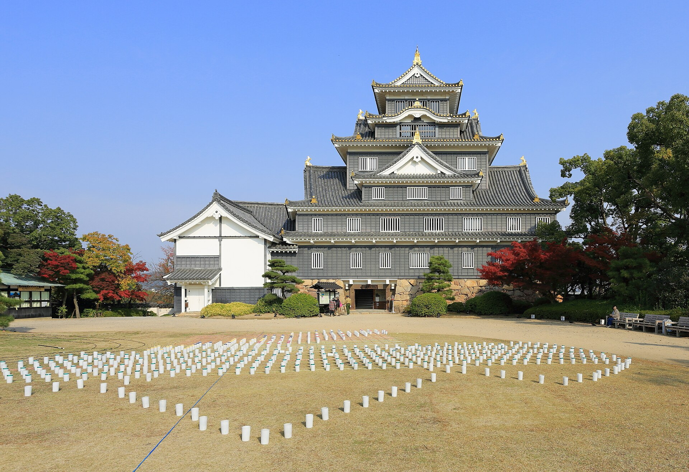
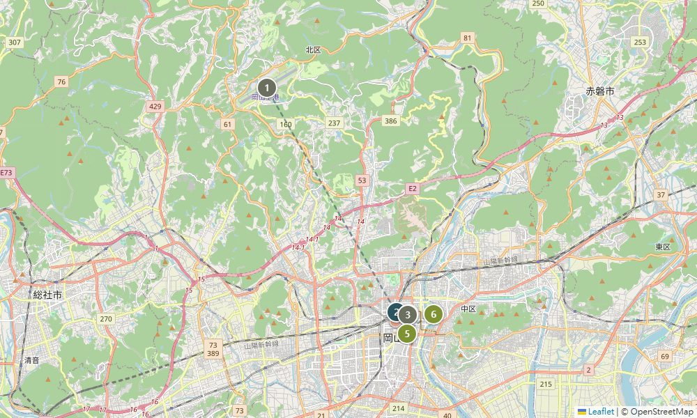

01DAY
9 / 27 星期日
抵達 · 岡山夜色

🗺 當日地圖

16:30
桃太郎機場降落入境、提行李約 30-40 分
17:25*
🚌 機場 → 利木津巴士（リムジンバス・機場巴士，約30分,¥1,000）→ 岡山站西口 時刻表↗
⚠️
機場巴士配合班機、班次不多，一出關就確認最近一班（白天定期班較疏）。萬一沒接到，計程車是穩當備援 ↓
萬一沒接到巴士？備援與叫車
利木津巴士配合班機，國際線到著通常會加開臨時便往岡山站；但定期班白天較疏（現行表 16:55 後直接跳到 18:55）。所以一出關先看有沒有臨時便或最近一班。
備援＝計程車：機場是熱點，排班與叫車App都好叫，到岡山站約 30 分、約 ¥3,500（4人均分每人約 ¥900，和巴士差不多）。
叫車App：裝 GO 或 DiDi（岡山市區兩者都好用）。
17:55
抵岡山站 → 步行 5 分 → 後樂飯店 check-in
18:30
站前接風晚餐：味司 野村（あじつかさ のむら／元祖デミカツ丼，元祖多蜜醬炸豬排丼）｜一人 ¥1,000–1,500岡山名物「半熟蛋＋多蜜醬汁炸豬排丼」發祥老店（1931 年）。位置就在西川綠道公園駅旁，剛好接今晚的散步動線。9/27 週日營業 11:00–21:00（週一公休）地圖↗
若主餐客滿 · 晚餐備選
先選岡山駅直結的牛かつ上村或さんすて；想吃鐵板、土雞或燒肉，再看完整餐廳名單。
19:30
西川綠道散步 ＋ 烏城夜景岡山城夜間點燈、外觀免費（亮到 24:00）。累可改天看，每晚都點燈